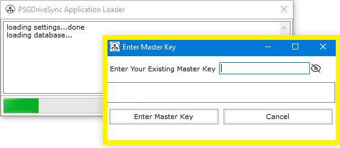

|
The application's local database stores your google drive access token, refresh token, paths of files and folders that you have set out
for sync operations and most importantly the encryption keys used to encrypt your files among many other things. In order to add an extra layer of protection over
all this sensitive information, the entire database get encrypted with AES-256 encryption standard.Doing this makes sure that nobody except you gets to access the information
that is saved in the application's local database.
The encryption key that is used to encrypt the entire database has been termed as "Master Key". The master key is not saved anywhere by the application which means that if you lose or forget
this key then your sync settings and other application settings will become inaccessible and you wont be start the application. The only way out of this situation would be to start over with a
new database.
Doing so will have no impact on the files and folders in your local and or remote (google) drives unless you have used encryption to encrypt your files and folders in which case you would need
to create those encryption keys tags with the exact same encryption keys in order to be able to decrypt those encrypted files. If you are not able to do that then all those files will become
inaccessible and that is the reason why we cannot emphasize enough on the importance of not losing or forgetting your master key.
Here is a quote from the Wikipedia pages
on AES Encryption:
"The National Security Agency (NSA) reviewed all the AES finalists, including Rijndael, and stated that all of them were secure enough for U.S. Government non-classified data.
In June 2003, the U.S. Government announced that AES could be used to protect classified information:The design and strength of all key lengths of the AES algorithm (i.e., 128, 192 and 256)
are sufficient to protect classified information up to the SECRET level. TOP SECRET information will require use of either the 192 or 256 key lengths. The implementation of AES in products
intended to protect national security systems and/or information must be reviewed and certified by NSA prior to their acquisition and use."
|